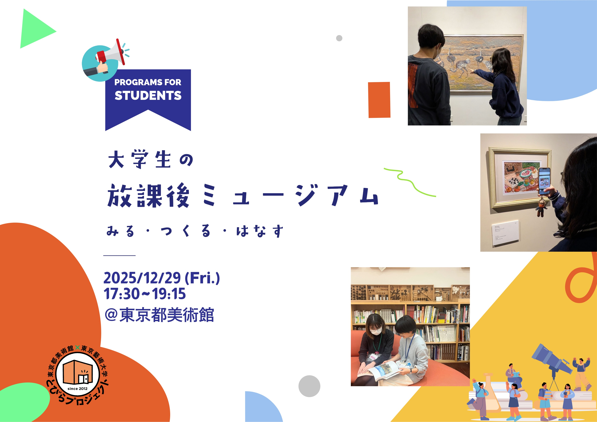

大学生の放課後ミュージアム

■ 企画概要
東京都美術館「とびらプロジェクト」のアートコミュニケータとして自ら企画を発案し、約20名のプロジェクトチームを組成。大学生・専門学生・大学院生を対象とした鑑賞プログラムをゼロから立ち上げた。
「美術館に興味はあるが、楽しみ方が分からない層」をターゲットに、知識ではなく「感性（体験）」に重きを置いたプログラムを設計。iPadを用いたコラージュ制作や対話型鑑賞を組み合わせ、参加者が能動的に作品に関わる仕組みを構築した。
企画書作成から広報、当日の運営指揮までを一貫して担当し、参加者の心理的ハードルを下げてアートへの新しい関わり方を提示することに成功した。
■ プログラムフロー：体験の設計
- ① みる：
アートコミュニケータ（とびラー）と共に展示室を巡る。「自分の部屋に飾りたい作品」という独自の視点で3～5つの作品を見つけ、写真に収める。 - ② つくる：
ワークスペースに戻り、採集した作品写真をiPad上でコラージュ。自分だけの「理想の壁」をコーディネートする。 - ③ はなす：
完成した「理想の壁」を囲み、作品を選んだ理由やコンセプトをグループでシェアする。
■ フォーラム登壇
14年続く本事業の成功事例として、企画『放課後ミュージアム』が選出。2026年1月25日、東京都美術館 講堂にて開催された公式フォーラムに登壇した。
鑑賞が生むコミュニティの創造性について、220名の観客を前にディスカッションを実施。既存の枠組みに捉われない「大学生向けプログラム」の開拓と、参加者の「好き」を言語化させた実践が、アートコミュニケーションの新たなモデルとして高く評価された。
■ 記録・アーカイブ
- 公式WEBサイト：https://tobira-project.info/f2026/
- フォーラム記録動画：https://youtu.be/qrjDPr2DpTM